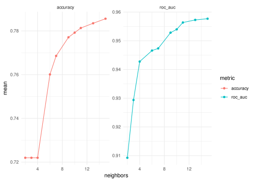
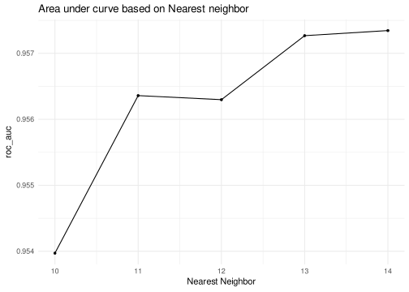
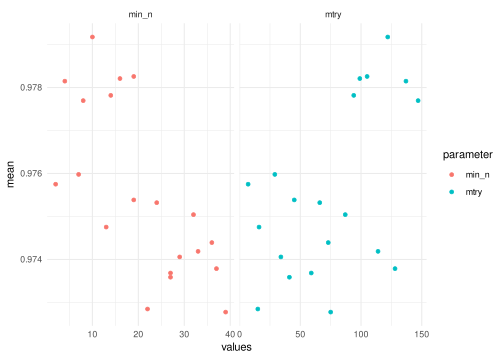
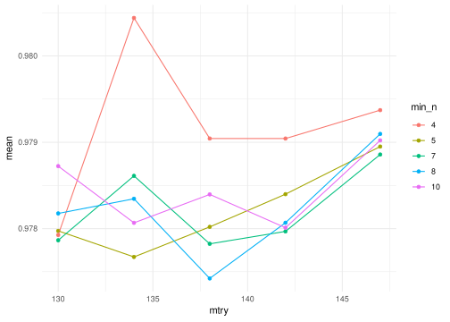
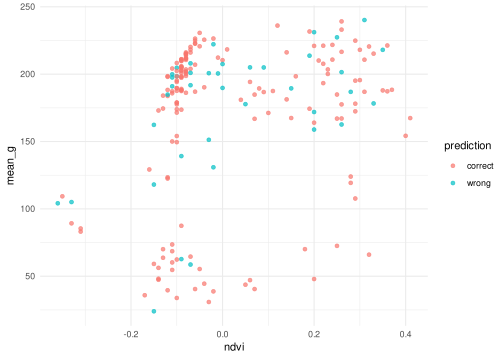
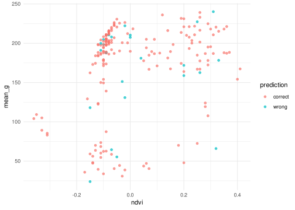

urban_data_classification
Olamide_Adu
2023-12-09
I want to build a model for the classification of different part of an urban setting. We can predict if an object is a car, tree, building, and so on using this model.
Exploratory Data Analysis
The data is partitioned into test and train data already, but we will combine and resplit to prevent class imbalance of the outcomes
test_data <- read_csv("https://raw.githubusercontent.com/xrander/urban_data_classification/master/Data%20Science/Personal%20Project/urban_data_classification/testing.csv")## Rows: 507 Columns: 148
## ── Column specification ────────────────────────────────────────────────────────
## Delimiter: ","
## chr (1): class
## dbl (147): BrdIndx, Area, Round, Bright, Compact, ShpIndx, Mean_G, Mean_R, M...
##
## ℹ Use `spec()` to retrieve the full column specification for this data.
## ℹ Specify the column types or set `show_col_types = FALSE` to quiet this message.train_data <- read_csv("https://raw.githubusercontent.com/xrander/urban_data_classification/master/Data%20Science/Personal%20Project/urban_data_classification/training.csv")## Rows: 168 Columns: 148
## ── Column specification ────────────────────────────────────────────────────────
## Delimiter: ","
## chr (1): class
## dbl (147): BrdIndx, Area, Round, Bright, Compact, ShpIndx, Mean_G, Mean_R, M...
##
## ℹ Use `spec()` to retrieve the full column specification for this data.
## ℹ Specify the column types or set `show_col_types = FALSE` to quiet this message.First we compare the training and test data to see if they are similar, we join them then carry out the EDA properly.
## [1] TRUEurban_data <- bind_rows(train_data, test_data) %>%
clean_names() %>%
mutate_if(is.character, factor)We check for the data properties
| Name | urban_data |
| Number of rows | 675 |
| Number of columns | 148 |
| _______________________ | |
| Column type frequency: | |
| factor | 1 |
| numeric | 147 |
| ________________________ | |
| Group variables | None |
Variable type: factor
| skim_variable | n_missing | complete_rate | ordered | n_unique | top_counts |
|---|---|---|---|---|---|
| class | 0 | 1 | FALSE | 9 | bui: 122, con: 116, gra: 112, tre: 106 |
Variable type: numeric
| skim_variable | n_missing | complete_rate | mean | sd | p0 | p25 | p50 | p75 | p100 | hist |
|---|---|---|---|---|---|---|---|---|---|---|
| brd_indx | 0 | 1 | 2.02 | 0.62 | 1.00 | 1.57 | 1.94 | 2.38 | 4.53 | ▆▇▃▁▁ |
| area | 0 | 1 | 563.34 | 693.52 | 10.00 | 160.50 | 316.00 | 679.50 | 5767.00 | ▇▁▁▁▁ |
| round | 0 | 1 | 1.21 | 0.55 | 0.00 | 0.82 | 1.18 | 1.50 | 3.52 | ▂▇▅▁▁ |
| bright | 0 | 1 | 165.60 | 62.85 | 26.85 | 127.68 | 170.01 | 224.31 | 245.87 | ▂▂▅▃▇ |
| compact | 0 | 1 | 2.16 | 0.83 | 1.00 | 1.62 | 1.99 | 2.48 | 8.07 | ▇▂▁▁▁ |
| shp_indx | 0 | 1 | 2.27 | 0.71 | 1.04 | 1.71 | 2.17 | 2.68 | 5.41 | ▆▇▃▁▁ |
| mean_g | 0 | 1 | 165.12 | 60.27 | 22.91 | 132.90 | 189.41 | 207.69 | 246.35 | ▃▂▁▇▇ |
| mean_r | 0 | 1 | 162.64 | 72.88 | 26.52 | 99.19 | 159.49 | 237.26 | 253.61 | ▂▅▃▂▇ |
| mean_nir | 0 | 1 | 169.05 | 69.24 | 31.11 | 112.53 | 167.83 | 237.47 | 253.63 | ▂▃▅▂▇ |
| sd_g | 0 | 1 | 10.58 | 5.02 | 3.55 | 6.92 | 8.94 | 13.11 | 36.40 | ▇▃▁▁▁ |
| sd_r | 0 | 1 | 9.31 | 4.41 | 2.02 | 6.38 | 8.10 | 11.58 | 37.45 | ▇▅▁▁▁ |
| sd_nir | 0 | 1 | 9.19 | 4.34 | 2.09 | 6.48 | 8.04 | 11.09 | 35.85 | ▇▅▁▁▁ |
| lw | 0 | 1 | 2.30 | 1.71 | 1.00 | 1.40 | 1.85 | 2.57 | 22.67 | ▇▁▁▁▁ |
| glcm1 | 0 | 1 | 0.56 | 0.15 | 0.09 | 0.46 | 0.56 | 0.67 | 0.89 | ▁▃▇▇▂ |
| rect | 0 | 1 | 0.73 | 0.14 | 0.22 | 0.64 | 0.76 | 0.84 | 1.00 | ▁▁▅▇▃ |
| glcm2 | 0 | 1 | 6.53 | 0.41 | 4.34 | 6.34 | 6.55 | 6.76 | 7.51 | ▁▁▂▇▂ |
| dens | 0 | 1 | 1.60 | 0.34 | 0.45 | 1.38 | 1.62 | 1.83 | 2.30 | ▁▂▆▇▃ |
| assym | 0 | 1 | 0.62 | 0.24 | 0.02 | 0.44 | 0.66 | 0.81 | 1.00 | ▂▃▅▇▆ |
| ndvi | 0 | 1 | 0.02 | 0.18 | -0.38 | -0.10 | -0.06 | 0.16 | 0.41 | ▁▇▃▃▃ |
| bord_lngth | 0 | 1 | 189.24 | 108.94 | 14.00 | 105.00 | 174.00 | 255.00 | 662.00 | ▇▇▃▁▁ |
| glcm3 | 0 | 1 | 2987.94 | 890.95 | 874.10 | 2396.91 | 2951.98 | 3452.82 | 7992.61 | ▂▇▂▁▁ |
| brd_indx_40 | 0 | 1 | 2.28 | 0.83 | 1.00 | 1.62 | 2.15 | 2.80 | 5.85 | ▇▇▃▁▁ |
| area_40 | 0 | 1 | 1382.72 | 1691.56 | 25.00 | 417.00 | 908.00 | 1796.50 | 24295.00 | ▇▁▁▁▁ |
| round_40 | 0 | 1 | 1.37 | 0.64 | 0.02 | 0.90 | 1.34 | 1.71 | 4.10 | ▃▇▃▁▁ |
| bright_40 | 0 | 1 | 164.63 | 61.77 | 29.89 | 126.29 | 167.15 | 222.27 | 245.61 | ▂▂▅▃▇ |
| compact_40 | 0 | 1 | 2.30 | 1.04 | 1.00 | 1.64 | 2.06 | 2.63 | 9.13 | ▇▂▁▁▁ |
| shp_indx_40 | 0 | 1 | 2.59 | 0.98 | 1.04 | 1.84 | 2.47 | 3.20 | 8.71 | ▇▆▁▁▁ |
| mean_g_40 | 0 | 1 | 164.11 | 58.65 | 23.38 | 133.92 | 187.72 | 205.18 | 245.63 | ▃▂▂▇▇ |
| mean_r_40 | 0 | 1 | 161.87 | 71.46 | 31.11 | 98.68 | 157.47 | 234.82 | 253.21 | ▃▅▃▂▇ |
| mean_nir_40 | 0 | 1 | 167.90 | 67.86 | 35.17 | 111.81 | 166.13 | 235.22 | 253.31 | ▂▃▅▂▇ |
| sd_g_40 | 0 | 1 | 14.76 | 8.27 | 4.42 | 8.79 | 11.86 | 18.22 | 52.40 | ▇▃▁▁▁ |
| sd_r_40 | 0 | 1 | 13.46 | 7.76 | 2.74 | 8.38 | 11.26 | 16.51 | 50.80 | ▇▅▁▁▁ |
| sd_nir_40 | 0 | 1 | 13.11 | 7.59 | 2.64 | 8.28 | 10.96 | 15.96 | 49.74 | ▇▅▁▁▁ |
| lw_40 | 0 | 1 | 2.68 | 3.33 | 1.00 | 1.42 | 1.92 | 2.80 | 55.68 | ▇▁▁▁▁ |
| glcm1_40 | 0 | 1 | 0.66 | 0.14 | 0.09 | 0.58 | 0.68 | 0.77 | 0.92 | ▁▁▅▇▆ |
| rect_40 | 0 | 1 | 0.71 | 0.16 | 0.05 | 0.62 | 0.74 | 0.84 | 1.00 | ▁▁▃▇▅ |
| glcm2_40 | 0 | 1 | 7.06 | 0.52 | 4.93 | 6.72 | 7.03 | 7.36 | 8.56 | ▁▁▇▆▁ |
| dens_40 | 0 | 1 | 1.59 | 0.40 | 0.29 | 1.31 | 1.63 | 1.89 | 2.41 | ▁▂▆▇▃ |
| assym_40 | 0 | 1 | 0.64 | 0.24 | 0.02 | 0.47 | 0.65 | 0.85 | 1.00 | ▁▃▆▆▇ |
| ndvi_40 | 0 | 1 | 0.02 | 0.17 | -0.37 | -0.10 | -0.06 | 0.16 | 0.39 | ▁▇▃▃▃ |
| bord_lngth_40 | 0 | 1 | 354.24 | 237.55 | 24.00 | 177.00 | 304.00 | 491.00 | 2620.00 | ▇▂▁▁▁ |
| glcm3_40 | 0 | 1 | 2183.81 | 805.25 | 638.56 | 1571.11 | 2112.17 | 2670.10 | 6262.92 | ▅▇▂▁▁ |
| brd_indx_60 | 0 | 1 | 2.49 | 0.98 | 1.00 | 1.69 | 2.34 | 3.14 | 5.95 | ▇▇▅▂▁ |
| area_60 | 0 | 1 | 2285.33 | 2493.53 | 30.00 | 744.50 | 1499.00 | 2830.00 | 24295.00 | ▇▁▁▁▁ |
| round_60 | 0 | 1 | 1.48 | 0.68 | 0.02 | 0.99 | 1.42 | 1.88 | 4.20 | ▃▇▅▁▁ |
| bright_60 | 0 | 1 | 164.17 | 60.54 | 29.89 | 125.68 | 167.06 | 221.83 | 245.30 | ▂▂▅▅▇ |
| compact_60 | 0 | 1 | 2.47 | 1.18 | 1.00 | 1.66 | 2.12 | 2.91 | 8.54 | ▇▃▁▁▁ |
| shp_indx_60 | 0 | 1 | 2.82 | 1.12 | 1.05 | 1.90 | 2.72 | 3.51 | 7.72 | ▇▇▃▁▁ |
| mean_g_60 | 0 | 1 | 163.52 | 57.41 | 23.38 | 129.70 | 187.10 | 203.96 | 244.89 | ▂▂▂▇▆ |
| mean_r_60 | 0 | 1 | 161.57 | 69.79 | 31.11 | 100.78 | 157.46 | 233.98 | 253.21 | ▃▅▃▂▇ |
| mean_nir_60 | 0 | 1 | 167.41 | 66.27 | 35.17 | 113.25 | 166.64 | 233.58 | 253.31 | ▃▃▅▂▇ |
| sd_g_60 | 0 | 1 | 18.06 | 10.21 | 4.42 | 10.24 | 14.44 | 24.34 | 57.08 | ▇▃▂▁▁ |
| sd_r_60 | 0 | 1 | 16.76 | 9.78 | 2.74 | 9.89 | 14.45 | 20.85 | 58.32 | ▇▆▂▁▁ |
| sd_nir_60 | 0 | 1 | 16.24 | 9.54 | 2.64 | 9.80 | 13.76 | 20.44 | 58.44 | ▇▆▁▁▁ |
| lw_60 | 0 | 1 | 2.74 | 3.34 | 1.00 | 1.40 | 1.95 | 2.93 | 52.59 | ▇▁▁▁▁ |
| glcm1_60 | 0 | 1 | 0.72 | 0.13 | 0.09 | 0.64 | 0.74 | 0.82 | 0.94 | ▁▁▃▇▇ |
| rect_60 | 0 | 1 | 0.69 | 0.17 | 0.04 | 0.59 | 0.72 | 0.82 | 1.00 | ▁▁▃▇▅ |
| glcm2_60 | 0 | 1 | 7.35 | 0.61 | 5.29 | 6.92 | 7.29 | 7.78 | 9.03 | ▁▂▇▅▁ |
| dens_60 | 0 | 1 | 1.57 | 0.41 | 0.33 | 1.30 | 1.63 | 1.88 | 2.41 | ▁▃▆▇▃ |
| assym_60 | 0 | 1 | 0.65 | 0.24 | 0.03 | 0.47 | 0.68 | 0.86 | 1.00 | ▁▃▆▆▇ |
| ndvi_60 | 0 | 1 | 0.02 | 0.16 | -0.36 | -0.10 | -0.05 | 0.15 | 0.39 | ▁▇▃▃▂ |
| bord_lngth_60 | 0 | 1 | 507.03 | 354.00 | 24.00 | 236.00 | 438.00 | 698.00 | 3202.00 | ▇▃▁▁▁ |
| glcm3_60 | 0 | 1 | 1786.31 | 712.56 | 443.22 | 1250.85 | 1708.19 | 2200.70 | 5148.05 | ▆▇▃▁▁ |
| brd_indx_80 | 0 | 1 | 2.74 | 1.14 | 1.00 | 1.83 | 2.62 | 3.49 | 6.76 | ▇▇▅▂▁ |
| area_80 | 0 | 1 | 3408.93 | 3791.29 | 30.00 | 1180.50 | 2208.00 | 4158.00 | 42018.00 | ▇▁▁▁▁ |
| round_80 | 0 | 1 | 1.58 | 0.71 | 0.09 | 1.08 | 1.55 | 1.98 | 5.84 | ▅▇▂▁▁ |
| bright_80 | 0 | 1 | 162.60 | 59.64 | 31.86 | 123.53 | 165.32 | 219.62 | 245.30 | ▃▂▆▅▇ |
| compact_80 | 0 | 1 | 2.67 | 1.46 | 1.00 | 1.72 | 2.30 | 3.18 | 17.15 | ▇▁▁▁▁ |
| shp_indx_80 | 0 | 1 | 3.11 | 1.31 | 1.05 | 2.09 | 2.95 | 3.97 | 7.95 | ▇▇▅▁▁ |
| mean_g_80 | 0 | 1 | 161.81 | 56.16 | 24.05 | 124.25 | 184.43 | 202.63 | 244.89 | ▂▂▂▇▆ |
| mean_r_80 | 0 | 1 | 160.10 | 68.41 | 32.96 | 101.18 | 156.39 | 230.99 | 253.21 | ▃▅▅▃▇ |
| mean_nir_80 | 0 | 1 | 165.87 | 65.04 | 37.76 | 111.81 | 165.31 | 230.98 | 253.31 | ▃▃▅▃▇ |
| sd_g_80 | 0 | 1 | 20.93 | 12.02 | 4.42 | 11.57 | 16.71 | 28.47 | 63.46 | ▇▅▃▁▁ |
| sd_r_80 | 0 | 1 | 19.79 | 11.38 | 2.74 | 11.52 | 16.79 | 25.46 | 66.77 | ▇▆▃▁▁ |
| sd_nir_80 | 0 | 1 | 19.15 | 11.04 | 2.65 | 11.03 | 16.37 | 24.25 | 65.38 | ▇▆▂▁▁ |
| lw_80 | 0 | 1 | 2.86 | 3.70 | 1.00 | 1.42 | 1.97 | 2.76 | 56.91 | ▇▁▁▁▁ |
| glcm1_80 | 0 | 1 | 0.75 | 0.12 | 0.20 | 0.69 | 0.78 | 0.84 | 0.94 | ▁▁▂▇▇ |
| rect_80 | 0 | 1 | 0.67 | 0.18 | 0.00 | 0.56 | 0.69 | 0.81 | 1.00 | ▁▂▅▇▅ |
| glcm2_80 | 0 | 1 | 7.59 | 0.68 | 5.29 | 7.08 | 7.50 | 8.08 | 9.19 | ▁▂▇▅▃ |
| dens_80 | 0 | 1 | 1.54 | 0.43 | 0.33 | 1.23 | 1.57 | 1.87 | 2.41 | ▁▃▇▇▃ |
| assym_80 | 0 | 1 | 0.65 | 0.25 | 0.03 | 0.46 | 0.70 | 0.86 | 1.00 | ▁▃▅▇▇ |
| ndvi_80 | 0 | 1 | 0.02 | 0.15 | -0.36 | -0.09 | -0.05 | 0.14 | 0.38 | ▁▇▅▃▂ |
| bord_lngth_80 | 0 | 1 | 698.64 | 546.89 | 28.00 | 311.00 | 574.00 | 920.00 | 4608.00 | ▇▂▁▁▁ |
| glcm3_80 | 0 | 1 | 1537.06 | 635.13 | 434.86 | 1051.66 | 1427.74 | 1897.52 | 4946.90 | ▇▇▂▁▁ |
| brd_indx_100 | 0 | 1 | 2.98 | 1.29 | 1.00 | 1.89 | 2.78 | 3.95 | 7.29 | ▇▇▅▂▁ |
| area_100 | 0 | 1 | 4664.84 | 4822.17 | 66.00 | 1635.50 | 3113.00 | 6138.00 | 42018.00 | ▇▁▁▁▁ |
| round_100 | 0 | 1 | 1.67 | 0.75 | 0.09 | 1.16 | 1.64 | 2.09 | 5.08 | ▃▇▃▁▁ |
| bright_100 | 0 | 1 | 162.25 | 58.93 | 31.86 | 122.59 | 164.54 | 218.84 | 244.85 | ▃▃▆▅▇ |
| compact_100 | 0 | 1 | 2.86 | 1.67 | 1.00 | 1.73 | 2.48 | 3.39 | 18.51 | ▇▁▁▁▁ |
| shp_indx_100 | 0 | 1 | 3.38 | 1.48 | 1.05 | 2.13 | 3.17 | 4.38 | 7.94 | ▇▇▆▂▁ |
| mean_g_100 | 0 | 1 | 162.09 | 54.60 | 24.05 | 124.09 | 183.51 | 202.37 | 241.25 | ▂▃▂▇▇ |
| mean_r_100 | 0 | 1 | 159.51 | 67.72 | 32.96 | 100.77 | 155.64 | 230.18 | 253.21 | ▃▅▅▃▇ |
| mean_nir_100 | 0 | 1 | 165.17 | 64.37 | 37.76 | 109.53 | 164.30 | 229.18 | 253.31 | ▃▅▅▃▇ |
| sd_g_100 | 0 | 1 | 23.61 | 13.32 | 4.42 | 12.82 | 19.04 | 32.21 | 63.51 | ▇▆▃▂▁ |
| sd_r_100 | 0 | 1 | 22.23 | 12.22 | 2.74 | 12.87 | 19.50 | 29.20 | 66.77 | ▇▇▃▂▁ |
| sd_nir_100 | 0 | 1 | 21.48 | 11.74 | 2.65 | 12.46 | 18.78 | 28.23 | 65.38 | ▇▇▃▂▁ |
| lw_100 | 0 | 1 | 2.96 | 4.43 | 1.00 | 1.38 | 1.88 | 2.79 | 56.91 | ▇▁▁▁▁ |
| glcm1_100 | 0 | 1 | 0.78 | 0.11 | 0.20 | 0.73 | 0.80 | 0.87 | 0.96 | ▁▁▂▆▇ |
| rect_100 | 0 | 1 | 0.64 | 0.19 | 0.01 | 0.50 | 0.67 | 0.79 | 1.00 | ▁▂▆▇▅ |
| glcm2_100 | 0 | 1 | 7.78 | 0.73 | 5.69 | 7.24 | 7.74 | 8.33 | 9.57 | ▁▅▇▅▂ |
| dens_100 | 0 | 1 | 1.51 | 0.45 | 0.33 | 1.18 | 1.52 | 1.88 | 2.41 | ▁▅▇▇▅ |
| assym_100 | 0 | 1 | 0.65 | 0.25 | 0.03 | 0.46 | 0.68 | 0.86 | 1.00 | ▂▃▅▆▇ |
| ndvi_100 | 0 | 1 | 0.02 | 0.15 | -0.36 | -0.09 | -0.04 | 0.14 | 0.38 | ▁▇▅▅▂ |
| bord_lngth_100 | 0 | 1 | 906.15 | 718.20 | 34.00 | 388.00 | 726.00 | 1286.00 | 4858.00 | ▇▃▁▁▁ |
| glcm3_100 | 0 | 1 | 1337.81 | 573.05 | 298.23 | 919.23 | 1243.63 | 1619.44 | 3825.80 | ▅▇▃▁▁ |
| brd_indx_120 | 0 | 1 | 3.20 | 1.41 | 1.00 | 2.00 | 3.01 | 4.12 | 7.84 | ▇▇▆▂▁ |
| area_120 | 0 | 1 | 6084.20 | 6124.13 | 66.00 | 2217.50 | 4174.00 | 7980.50 | 51578.00 | ▇▁▁▁▁ |
| round_120 | 0 | 1 | 1.74 | 0.79 | 0.09 | 1.25 | 1.70 | 2.16 | 5.87 | ▃▇▂▁▁ |
| bright_120 | 0 | 1 | 161.76 | 58.16 | 31.86 | 120.71 | 162.90 | 218.13 | 244.85 | ▂▃▆▅▇ |
| compact_120 | 0 | 1 | 2.98 | 1.84 | 1.00 | 1.80 | 2.56 | 3.50 | 18.51 | ▇▁▁▁▁ |
| shp_indx_120 | 0 | 1 | 3.60 | 1.62 | 1.05 | 2.33 | 3.44 | 4.66 | 12.06 | ▇▇▂▁▁ |
| mean_g_120 | 0 | 1 | 161.99 | 53.21 | 24.05 | 125.27 | 181.47 | 202.04 | 241.25 | ▂▃▂▇▇ |
| mean_r_120 | 0 | 1 | 158.93 | 66.96 | 32.96 | 100.54 | 152.89 | 229.76 | 253.21 | ▃▅▅▃▇ |
| mean_nir_120 | 0 | 1 | 164.37 | 63.53 | 37.76 | 109.74 | 159.77 | 228.74 | 253.31 | ▃▃▆▃▇ |
| sd_g_120 | 0 | 1 | 25.69 | 14.29 | 4.42 | 13.68 | 21.96 | 35.39 | 64.86 | ▇▆▃▃▁ |
| sd_r_120 | 0 | 1 | 23.88 | 12.36 | 2.74 | 14.07 | 21.20 | 32.25 | 61.97 | ▆▇▅▂▁ |
| sd_nir_120 | 0 | 1 | 23.12 | 11.93 | 2.65 | 13.39 | 20.93 | 31.14 | 61.34 | ▆▇▅▂▁ |
| lw_120 | 0 | 1 | 2.92 | 4.81 | 1.00 | 1.38 | 1.87 | 2.75 | 56.91 | ▇▁▁▁▁ |
| glcm1_120 | 0 | 1 | 0.80 | 0.11 | 0.20 | 0.75 | 0.82 | 0.88 | 0.97 | ▁▁▁▆▇ |
| rect_120 | 0 | 1 | 0.63 | 0.19 | 0.06 | 0.49 | 0.65 | 0.78 | 1.00 | ▁▃▆▇▅ |
| glcm2_120 | 0 | 1 | 7.91 | 0.75 | 5.69 | 7.32 | 7.89 | 8.52 | 9.57 | ▁▅▇▆▃ |
| dens_120 | 0 | 1 | 1.51 | 0.45 | 0.23 | 1.20 | 1.52 | 1.86 | 2.41 | ▁▃▇▇▅ |
| assym_120 | 0 | 1 | 0.64 | 0.25 | 0.03 | 0.46 | 0.67 | 0.85 | 1.00 | ▂▃▅▆▇ |
| ndvi_120 | 0 | 1 | 0.02 | 0.14 | -0.36 | -0.08 | -0.03 | 0.15 | 0.37 | ▁▇▅▅▂ |
| bord_lngth_120 | 0 | 1 | 1116.84 | 885.77 | 34.00 | 492.00 | 870.00 | 1511.00 | 6236.00 | ▇▃▁▁▁ |
| glcm3_120 | 0 | 1 | 1208.74 | 561.57 | 211.27 | 798.21 | 1120.33 | 1474.08 | 3806.36 | ▆▇▂▁▁ |
| brd_indx_140 | 0 | 1 | 3.35 | 1.47 | 1.00 | 2.14 | 3.28 | 4.38 | 7.84 | ▇▇▆▃▁ |
| area_140 | 0 | 1 | 7315.05 | 7422.02 | 66.00 | 2670.50 | 5243.00 | 9203.50 | 51578.00 | ▇▂▁▁▁ |
| round_140 | 0 | 1 | 1.78 | 0.80 | 0.09 | 1.26 | 1.77 | 2.18 | 5.87 | ▃▇▂▁▁ |
| bright_140 | 0 | 1 | 161.34 | 58.01 | 31.86 | 120.94 | 163.38 | 216.26 | 244.85 | ▂▃▆▅▇ |
| compact_140 | 0 | 1 | 3.09 | 1.95 | 1.00 | 1.87 | 2.64 | 3.69 | 18.51 | ▇▁▁▁▁ |
| shp_indx_140 | 0 | 1 | 3.78 | 1.71 | 1.05 | 2.44 | 3.65 | 4.84 | 12.26 | ▇▇▃▁▁ |
| mean_g_140 | 0 | 1 | 161.61 | 52.69 | 24.05 | 126.68 | 179.21 | 201.72 | 241.25 | ▂▂▂▇▇ |
| mean_r_140 | 0 | 1 | 158.54 | 66.68 | 32.96 | 102.73 | 154.13 | 229.00 | 253.21 | ▃▅▅▃▇ |
| mean_nir_140 | 0 | 1 | 163.86 | 63.29 | 37.76 | 111.97 | 160.37 | 227.67 | 253.31 | ▃▅▅▃▇ |
| sd_g_140 | 0 | 1 | 27.11 | 14.89 | 4.42 | 14.12 | 22.99 | 39.50 | 68.32 | ▇▆▃▃▁ |
| sd_r_140 | 0 | 1 | 25.22 | 12.83 | 2.74 | 15.02 | 22.69 | 34.31 | 61.97 | ▅▇▅▃▁ |
| sd_nir_140 | 0 | 1 | 24.39 | 12.36 | 2.65 | 14.29 | 22.19 | 33.29 | 61.34 | ▆▇▆▃▁ |
| lw_140 | 0 | 1 | 2.97 | 5.25 | 1.00 | 1.38 | 1.87 | 2.62 | 64.70 | ▇▁▁▁▁ |
| glcm1_140 | 0 | 1 | 0.81 | 0.11 | 0.20 | 0.76 | 0.83 | 0.89 | 0.97 | ▁▁▁▅▇ |
| rect_140 | 0 | 1 | 0.61 | 0.20 | 0.10 | 0.46 | 0.63 | 0.76 | 1.00 | ▁▅▇▇▃ |
| glcm2_140 | 0 | 1 | 7.99 | 0.77 | 5.69 | 7.36 | 7.94 | 8.64 | 9.57 | ▁▅▇▇▅ |
| dens_140 | 0 | 1 | 1.49 | 0.46 | 0.23 | 1.19 | 1.49 | 1.85 | 2.41 | ▁▅▇▇▅ |
| assym_140 | 0 | 1 | 0.64 | 0.25 | 0.03 | 0.46 | 0.68 | 0.85 | 1.00 | ▂▃▅▆▇ |
| ndvi_140 | 0 | 1 | 0.02 | 0.14 | -0.36 | -0.08 | -0.03 | 0.14 | 0.37 | ▁▇▆▅▂ |
| bord_lngth_140 | 0 | 1 | 1295.32 | 1062.15 | 34.00 | 542.00 | 1050.00 | 1746.00 | 8896.00 | ▇▂▁▁▁ |
| glcm3_140 | 0 | 1 | 1145.13 | 556.72 | 211.27 | 758.28 | 1054.67 | 1410.47 | 3806.36 | ▇▇▂▁▁ |
There are no missing data, we check for duplicates
## [1] FALSE TRUEurban_data %>%
group_by(class) %>% # group b
summarize(frequency = n()) %>%
ggplot(aes(class, frequency))+
geom_bar(stat = "identity",
fill = "burlywood3")+
theme_bw()+
ggtitle("Frequency Distribution of Classes")+
geom_text(aes(label = frequency,
vjust = 0.001))
The frequency shows there’s a class imbalance, which we have to take into consideration during data budgeting/splitting
Data Budgeting
set.seed(120) # to ensure reproducibility
urban_data_split <- initial_split(urban_data,
# set strata to compensate for class imbalance
strata = class,
prop = 0.7)
urban_train <- training(urban_data_split)
urban_test <- testing(urban_data_split)Feature Engineering
urban_train_rec <-
recipe(class ~., data = urban_train) %>%
step_zv(all_predictors()) %>%
step_nzv(all_predictors()) %>%
step_normalize(all_numeric_predictors())
urban_train_prep <- prep(urban_train_rec)
urban_train_prep## ## ── Recipe ──────────────────────────────────────────────────────────────────────## ## ── Inputs## Number of variables by role## outcome: 1
## predictor: 147## ## ── Training information## Training data contained 471 data points and no incomplete rows.## ## ── Operations## • Zero variance filter removed: <none> | Trained## • Sparse, unbalanced variable filter removed: <none> | Trained## • Centering and scaling for: brd_indx, area, round, bright, ... | TrainedBuild Models
KNN Model
KNN Modeling Workflow
Random Forest
RF Modeling Workflow
hyparameter Tuning
KNN Hyperparameter Tuning
set.seed(2333)
doParallel::registerDoParallel() # for parallel computing
# hyperparameter tuning
knn_tune <- tune_grid(
knn_workflow,
resamples = urban_train_resample
)
knn_tune %>%
collect_metrics()knn_tune %>%
collect_metrics() %>%
select(neighbors, .metric, mean) %>%
clean_names() %>%
ggplot(aes(neighbors, mean, col = metric))+
geom_point()+
geom_line()+
facet_wrap(~metric, scales = "free")
The accuracy and area under the curve improved between 10 and 14 neighbors. These values will be used for as the tune values.
KNN Hyperparameter grid search
knn_grid_search <- grid_regular(
neighbors(range = c(10,14)),
levels = 5
)
knn_tune_grid <- tune_grid(
knn_workflow,
resamples = urban_train_resample,
grid = knn_grid_search
)
autoplot(knn_tune_grid, metric = "roc_auc")+
labs(x = "Nearest Neighbor",
y = "roc_auc",
title = "Area under curve based on Nearest neighbor")
The figure above shows how auc improves as the neighbors increases. The table below show the best number of neighbors to use for a the model using roc_auc as the metric of evaluation.
RF Hyperparameter Tuning
## i Creating pre-processing data to finalize unknown parameter: mtryWe can choose the best value to use either using accuracy as the metric or using roc_auc as the metric of model evaluation.
The best 5 values for mtry and min_n combination when grid is set to 20 is show below
rf_tune %>%
collect_metrics() %>%
filter(.metric == "roc_auc") %>%
select(mtry, min_n, mean) %>%
pivot_longer(mtry:min_n,
names_to ="parameter",
values_to = "values") %>%
ggplot(aes(values, mean, col = parameter))+
geom_point()+
facet_wrap(~parameter, scales = "free_x")
As seen above, the best tune value is between 4 to 10 for min_n and 130 to 147 for mtry. We tune again using the combination of these values
RF Tuning with Grid Search
set.seed(345)
rf_grid <- grid_regular(
mtry(range = c(130, 147)),
min_n(range = c(4, 10)),
levels = 5
)
rf_gridrf_grid displays the number of combination of mtry and min_n to fit through to get the best roc_auc
rf_tune_grid %>%
collect_metrics() %>%
filter(.metric == "roc_auc") %>%
select(mtry, min_n, mean) %>%
mutate(min_n = factor(min_n)) %>%
ggplot(aes(mtry, mean, col = min_n))+
geom_point()+
geom_line()
Model Evaluation
knn_final_res %>%
collect_predictions() %>%
mutate(prediction = ifelse(class ==.pred_class, "correct", "wrong")) %>%
bind_cols(urban_test) %>%
ggplot(aes(ndvi, mean_g, col = prediction))+
geom_point(alpha = 0.7)## New names:
## • `class` -> `class...13`
## • `class` -> `class...16`
rf_final_res %>%
collect_predictions() %>%
mutate(prediction= if_else(class == .pred_class, "correct", "wrong")) %>%
bind_cols(urban_test) %>%
ggplot(aes(ndvi,mean_g, color =prediction))+
geom_point(alpha = 0.7)## New names:
## • `class` -> `class...13`
## • `class` -> `class...16`
The number of wrong prediction reduces while using randomForest
Confusion Matrix
## Truth
## Prediction asphalt building car concrete grass pool shadow soil tree
## asphalt 13 1 0 0 0 0 0 0 0
## building 0 31 0 1 1 2 0 2 0
## car 0 0 11 0 0 0 0 0 0
## concrete 1 5 0 35 3 0 0 1 0
## grass 0 1 0 0 27 0 0 2 4
## pool 0 0 1 0 0 4 0 0 0
## shadow 3 0 0 0 0 0 14 0 0
## soil 0 2 2 0 1 0 0 4 0
## tree 0 0 0 0 6 0 0 0 25## Truth
## Prediction asphalt building car concrete grass pool shadow soil tree
## asphalt 14 1 0 0 0 0 1 0 0
## building 0 35 0 2 0 0 0 2 0
## car 0 0 11 0 0 0 0 0 0
## concrete 0 3 3 34 0 0 0 0 0
## grass 0 0 0 0 33 0 0 0 2
## pool 0 0 0 0 0 6 0 0 0
## shadow 2 0 0 0 0 0 13 0 1
## soil 1 1 0 0 0 0 0 7 0
## tree 0 0 0 0 5 0 0 0 26Sensitivity
Conclusion
Both algorithms were able to produce reliable predictions for the urban class. The random forest algorithm model confusion matrix show little misclassification, better sensitivity and accuracy compared to knn algorithm model. If this is to be deployed into production the randomForest model should be choosen.